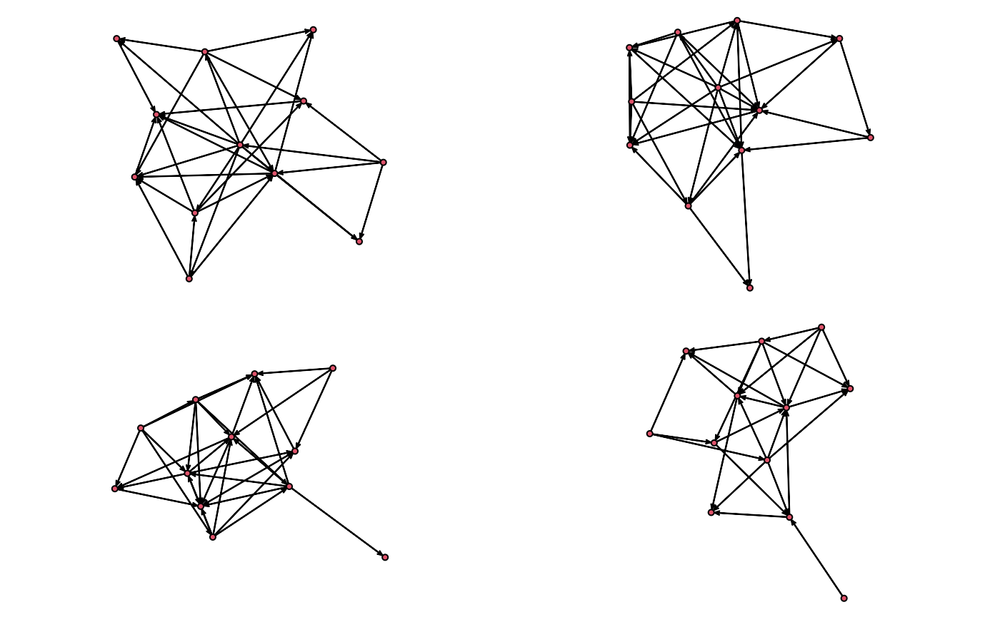
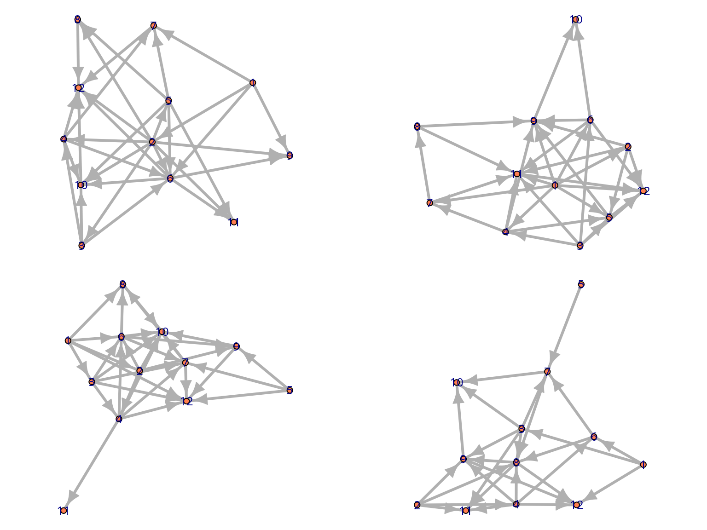

Using egor to analyse ego-centered network data
Till Krenz
2021-05-28
Source:vignettes/using_egor.Rmd
using_egor.Rmd
The egor Package
egor provides
- import functions
- egor object organizes ego-centered network, allowing for a smooth workflow
- dplyr methods: enable tidy data analysis strategies
- descriptive analysis (network composition, density, homophily, diversity)
- visualisation (clustered graphs, egographs, egogram)
- interacitve visualisation app
An egor object contains all data levels associated with ego-centered network analysis, those levels are: ego, alter, alter-alter ties. By providing the egor()-function with data.frames containing data corresponding to these data levels, we construct an egor object. Here is an example of what the data.frames could look like. Pay attention to the ID variables connecting the levels with each other.
library(egor)| .ALTID | .EGOID | sex | age | age.years | country | income |
|---|---|---|---|---|---|---|
| 1 | 1 | w | 66 - 100 | 75 | Australia | 42340 |
| 2 | 1 | m | 18 - 25 | 17 | Germany | 730 |
| 3 | 1 | w | 66 - 100 | 91 | Australia | 23360 |
| 4 | 1 | m | 0 - 17 | 10 | USA | 27010 |
| 5 | 1 | m | 66 - 100 | 67 | Poland | 33215 |
| 6 | 1 | m | 0 - 17 | 10 | USA | 31755 |
| .EGOID | sex | age | age.years | country | income |
|---|---|---|---|---|---|
| 1 | w | 36 - 45 | 45 | USA | 36135 |
| 2 | m | 36 - 45 | 37 | Germany | 35040 |
| 3 | m | 26 - 35 | 28 | Australia | 63875 |
| 4 | w | 0 - 17 | 2 | USA | 31755 |
| 5 | m | 56 - 65 | 56 | Germany | 14600 |
| 6 | m | 26 - 35 | 31 | Poland | 21900 |
| .EGOID | .SRCID | .TGTID | weight |
|---|---|---|---|
| 32 | 13 | 18 | 0.3333333 |
| 18 | 11 | 22 | 0.6666667 |
| 28 | 5 | 19 | 0.6666667 |
| 19 | 5 | 6 | 1.0000000 |
| 32 | 2 | 19 | 0.6666667 |
| 22 | 3 | 15 | 0.6666667 |
All three data.frames contain an egoID identifying a unique ego and connecting their personal data to the alter and alter-alter tie data. The alterID is in the alter data is reused in the alter-alter tie data in the Source and Target columns.
Let’s create an egor object from the data we just loaded.
e1 <- egor(alters = alters32,
egos = egos32,
aaties = aaties32,
ID.vars = list(
ego = ".EGOID",
alter = ".ALTID",
source = ".SRCID",
target = ".TGTID"))
e1
#> # EGO data ([32mactive[39m): 32 x 6
#> .egoID sex age age.years country income
#> <chr> <fct> <fct> <int> <fct> <dbl>
#> 1 1 w 36 - 45 45 USA 36135
#> 2 2 m 36 - 45 37 Germany 35040
#> 3 3 m 26 - 35 28 Australia 63875
#> 4 4 w 0 - 17 2 USA 31755
#> 5 5 m 56 - 65 56 Germany 14600
#> # ALTER data: 478 x 7
#> .altID .egoID sex age age.years country income
#> <chr> <chr> <fct> <fct> <int> <fct> <dbl>
#> 1 1 1 w 66 - 100 75 Australia 42340
#> 2 2 1 m 18 - 25 17 Germany 730
#> 3 3 1 w 66 - 100 91 Australia 23360
#> # AATIE data: 1,858 x 4
#> .egoID .srcID .tgtID weight
#> <chr> <chr> <chr> <dbl>
#> 1 32 13 18 0.333
#> 2 18 11 22 0.667
#> 3 28 5 19 0.667An [egor] object is a [list] of three [tibbles], named “ego”, “alter” and “aatie”, containg ego, alter and alter-alter tie data.
Import
There are currently three importing functions that read the data exported from data collection tools from the harddrive and load them as an egor object.
read_openeddi()
read_egoweb()
read_egonet()In addition there are three functions that help with the transformation of common data formats of ego-centered network data into egor objects:
onefile_to_egor()
twofiles_to_egor()
threefiles_to_egor()Manipulate
Manipulating an egor object can be done with base R functions or with dplyr verbs.
Base R
The different data levels of an egor object can be manipulated using square bracket subsetting or the subset() function.
Ego level:
e1[e1$ego$age.years > 35, ]
#> # EGO data ([32mactive[39m): 23 x 6
#> .egoID sex age age.years country income
#> <chr> <fct> <fct> <int> <fct> <dbl>
#> 1 1 w 36 - 45 45 USA 36135
#> 2 2 m 36 - 45 37 Germany 35040
#> 3 5 m 56 - 65 56 Germany 14600
#> 4 7 w 36 - 45 43 Poland 15695
#> 5 9 w 66 - 100 73 Poland 31390
#> # ALTER data: 334 x 7
#> .altID .egoID sex age age.years country income
#> <chr> <chr> <fct> <fct> <int> <fct> <dbl>
#> 1 1 1 w 66 - 100 75 Australia 42340
#> 2 2 1 m 18 - 25 17 Germany 730
#> 3 3 1 w 66 - 100 91 Australia 23360
#> # AATIE data: 1,296 x 4
#> .egoID .srcID .tgtID weight
#> <chr> <chr> <chr> <dbl>
#> 1 18 11 22 0.667
#> 2 28 5 19 0.667
#> 3 22 3 15 0.667Alter level:
subset(e1, e1$alter$sex == "w", unit = "alter")
#> # EGO data ([32mactive[39m): 32 x 6
#> .egoID sex age age.years country income
#> <chr> <fct> <fct> <int> <fct> <dbl>
#> 1 1 w 36 - 45 45 USA 36135
#> 2 2 m 36 - 45 37 Germany 35040
#> 3 3 m 26 - 35 28 Australia 63875
#> 4 4 w 0 - 17 2 USA 31755
#> 5 5 m 56 - 65 56 Germany 14600
#> # ALTER data: 181 x 7
#> .altID .egoID sex age age.years country income
#> <chr> <chr> <fct> <fct> <int> <fct> <dbl>
#> 1 1 1 w 66 - 100 75 Australia 42340
#> 2 3 1 w 66 - 100 91 Australia 23360
#> 3 1 2 w 66 - 100 75 Australia 42340
#> # AATIE data: 281 x 4
#> .egoID .srcID .tgtID weight
#> <chr> <chr> <chr> <dbl>
#> 1 18 11 22 0.667
#> 2 11 10 12 0.333
#> 3 24 10 11 0.333Alter-alter tie level:
subset(e1, e1$aatie$weight > 0.5, unit = "aatie")
#> # EGO data ([32mactive[39m): 32 x 6
#> .egoID sex age age.years country income
#> <chr> <fct> <fct> <int> <fct> <dbl>
#> 1 1 w 36 - 45 45 USA 36135
#> 2 2 m 36 - 45 37 Germany 35040
#> 3 3 m 26 - 35 28 Australia 63875
#> 4 4 w 0 - 17 2 USA 31755
#> 5 5 m 56 - 65 56 Germany 14600
#> # ALTER data: 478 x 7
#> .altID .egoID sex age age.years country income
#> <chr> <chr> <fct> <fct> <int> <fct> <dbl>
#> 1 1 1 w 66 - 100 75 Australia 42340
#> 2 2 1 m 18 - 25 17 Germany 730
#> 3 3 1 w 66 - 100 91 Australia 23360
#> # AATIE data: 1,241 x 4
#> .egoID .srcID .tgtID weight
#> <chr> <chr> <chr> <dbl>
#> 1 18 11 22 0.667
#> 2 28 5 19 0.667
#> 3 19 5 6 1activate() and dplyr verbs
An egor object can be manipulated with dplyr verbs. Using the activate() command, the data level to execute manipulations on, can be changed. This concept is borrwed from the tidygraph package.
If the manipulation leads to the deletion of egos, the respective alters and alter-alter ties are deleted as well. Similarly deletions of alters lead to the exclusion of the alter-alter ties of the deleted alters.
e1 %>%
filter(income > 36000)
#> # EGO data ([32mactive[39m): 13 x 6
#> .egoID sex age age.years country income
#> <chr> <fct> <fct> <int> <fct> <dbl>
#> 1 1 w 36 - 45 45 USA 36135
#> 2 3 m 26 - 35 28 Australia 63875
#> 3 8 m 0 - 17 1 Australia 37960
#> 4 10 w 66 - 100 74 Germany 43435
#> 5 11 m 66 - 100 81 Germany 71905
#> # ALTER data: 192 x 7
#> .altID .egoID sex age age.years country income
#> <chr> <chr> <fct> <fct> <int> <fct> <dbl>
#> 1 1 1 w 66 - 100 75 Australia 42340
#> 2 2 1 m 18 - 25 17 Germany 730
#> 3 3 1 w 66 - 100 91 Australia 23360
#> # AATIE data: 703 x 4
#> .egoID .srcID .tgtID weight
#> <chr> <chr> <chr> <dbl>
#> 1 22 3 15 0.667
#> 2 14 3 7 0.333
#> 3 15 5 8 0.333
e1 %>%
activate(alter) %>%
filter(country %in% c("USA", "Poland"))
#> # EGO data: 32 x 6
#> .egoID sex age age.years country income
#> <chr> <fct> <fct> <int> <fct> <dbl>
#> 1 1 w 36 - 45 45 USA 36135
#> 2 2 m 36 - 45 37 Germany 35040
#> 3 3 m 26 - 35 28 Australia 63875
#> # ALTER data ([32mactive[39m): 239 x 7
#> .altID .egoID sex age age.years country income
#> <chr> <chr> <fct> <fct> <int> <fct> <dbl>
#> 1 4 1 m 0 - 17 10 USA 27010
#> 2 5 1 m 66 - 100 67 Poland 33215
#> 3 6 1 m 0 - 17 10 USA 31755
#> 4 8 1 m 66 - 100 97 USA 67890
#> 5 4 2 m 0 - 17 10 USA 27010
#> # AATIE data: 454 x 4
#> .egoID .srcID .tgtID weight
#> <chr> <chr> <chr> <dbl>
#> 1 32 13 18 0.333
#> 2 18 11 22 0.667
#> 3 19 5 6 1
e1 %>%
activate(aatie) %>%
filter(weight > 0.7)
#> # EGO data: 32 x 6
#> .egoID sex age age.years country income
#> <chr> <fct> <fct> <int> <fct> <dbl>
#> 1 1 w 36 - 45 45 USA 36135
#> 2 2 m 36 - 45 37 Germany 35040
#> 3 3 m 26 - 35 28 Australia 63875
#> # ALTER data: 478 x 7
#> .altID .egoID sex age age.years country income
#> <chr> <chr> <fct> <fct> <int> <fct> <dbl>
#> 1 1 1 w 66 - 100 75 Australia 42340
#> 2 2 1 m 18 - 25 17 Germany 730
#> 3 3 1 w 66 - 100 91 Australia 23360
#> # AATIE data ([32mactive[39m): 598 x 4
#> .egoID .srcID .tgtID weight
#> <chr> <chr> <chr> <dbl>
#> 1 19 5 6 1
#> 2 13 12 17 1
#> 3 8 3 13 1
#> 4 32 8 14 1
#> 5 21 3 13 1Analyse
Try these function to analyse you egor object.
Summary
summary(e1)
#> 32 Egos/ Ego Networks
#> 478 Alters
#> Min. Netsize 6
#> Average Netsize 14.9375
#> Max. Netsize 24
#> Average Density 0.503451632597652
#> Alter survey design:
#> Maximum nominations: InfDensity
ego_density(e1)
#> # A tibble: 32 x 2
#> .egoID density
#> <chr> <dbl>
#> 1 1 0.5
#> 2 2 0.485
#> 3 3 0.55
#> 4 4 0.449
#> 5 5 0.467
#> 6 6 0.375
#> 7 7 0.491
#> 8 8 0.463
#> 9 9 0.417
#> 10 10 0.455
#> # … with 22 more rowsComposition
composition(e1, "age") %>%
head() %>%
kable()| .egoID | 0 - 17 | 18 - 25 | 26 - 35 | 36 - 45 | 46 - 55 | 56 - 65 | 66 - 100 |
|---|---|---|---|---|---|---|---|
| 1 | 0.3750000 | 0.1250000 | NA | NA | NA | NA | 0.5000000 |
| 10 | 0.3636364 | 0.0909091 | NA | NA | NA | NA | 0.5454545 |
| 11 | 0.2777778 | 0.0555556 | 0.0555556 | 0.0555556 | 0.1111111 | 0.0555556 | 0.3888889 |
| 12 | 0.3076923 | 0.0769231 | 0.0769231 | NA | NA | NA | 0.5384615 |
| 13 | 0.2727273 | 0.0454545 | 0.1363636 | 0.0909091 | 0.0909091 | 0.0454545 | 0.3181818 |
| 14 | 0.2857143 | 0.0476190 | 0.1428571 | 0.0476190 | 0.0952381 | 0.0476190 | 0.3333333 |
Diversity
alts_diversity_count(e1, "age")
#> # A tibble: 32 x 2
#> .egoID diversity
#> <chr> <dbl>
#> 1 1 3
#> 2 2 7
#> 3 3 6
#> 4 4 7
#> 5 5 3
#> 6 6 6
#> 7 7 3
#> 8 8 7
#> 9 9 3
#> 10 10 3
#> # … with 22 more rows
alts_diversity_entropy(e1, "age")
#> # A tibble: 32 x 2
#> .egoID entropy
#> <chr> <dbl>
#> 1 1 1.41
#> 2 2 2.29
#> 3 3 2.05
#> 4 4 2.25
#> 5 5 1.36
#> 6 6 2.05
#> 7 7 1.32
#> 8 8 2.25
#> 9 9 1.39
#> 10 10 1.32
#> # … with 22 more rowsEgo-Alter Homophily (EI-Index)
comp_ei(e1, "age", "age")
#> # A tibble: 32 x 2
#> .egoID ei
#> <chr> <dbl>
#> 1 1 1
#> 2 2 0.895
#> 3 3 0.875
#> 4 4 0.412
#> 5 5 1
#> 6 6 0.875
#> 7 7 1
#> 8 8 0.412
#> 9 9 0.111
#> 10 10 -0.0909
#> # … with 22 more rowsEI-Index for Alter-Alter Ties
| .egoID | ei | 0 - 17 | 18 - 25 | 66 - 100 | 26 - 35 | 36 - 45 | 46 - 55 | 56 - 65 |
|---|---|---|---|---|---|---|---|---|
| 1 | 0.0843373 | -0.1764706 | NaN | 0.2558140 | NA | NA | NA | NA |
| 2 | -0.1018011 | -0.1005291 | NaN | -0.1428571 | NaN | NaN | -0.3333333 | NaN |
| 3 | -0.0368932 | 0.0909091 | NaN | -0.0985915 | NaN | NA | NaN | NaN |
| 4 | 0.1460259 | 0.1818182 | NaN | 0.1208791 | NaN | NaN | NaN | NaN |
| 5 | -0.1523179 | -0.1851852 | NaN | -0.1627907 | NA | NA | NA | NA |
| 6 | 0.0987342 | 0.2903226 | NaN | 0.0400000 | NaN | NA | NaN | NaN |
Count attribute combinations in alter-alter ties/ dyads
# return results as "wide" tibble
count_dyads(
object = e1,
alter_var_name = "country"
)
#> # A tibble: 32 x 11
#> .egoID dy_cou_Australia_… dy_cou_Australia… dy_cou_Australi… dy_cou_Australi…
#> <chr> <int> <int> <int> <int>
#> 1 1 1 2 2 5
#> 2 10 1 4 4 3
#> 3 11 0 8 7 10
#> 4 12 2 2 4 7
#> 5 13 3 16 16 11
#> 6 14 5 15 10 7
#> 7 15 1 9 9 11
#> 8 16 2 5 5 6
#> 9 17 3 16 9 13
#> 10 18 2 16 12 13
#> # … with 22 more rows, and 6 more variables: dy_cou_Germany_USA <int>,
#> # dy_cou_USA_USA <int>, dy_cou_Germany_Germany <int>,
#> # dy_cou_Germany_Poland <int>, dy_cou_Poland_Poland <int>,
#> # dy_cou_Poland_USA <int>
# return results as "long" tibble
count_dyads(
object = e1,
alter_var_name = "country",
return_as = "long"
)
#> # A tibble: 292 x 3
#> .egoID dyads n
#> <chr> <chr> <int>
#> 1 1 Australia_Australia 1
#> 2 1 Australia_Germany 2
#> 3 1 Australia_Poland 2
#> 4 1 Australia_USA 5
#> 5 1 Germany_USA 2
#> 6 1 USA_USA 2
#> 7 10 Australia_Australia 1
#> 8 10 Australia_Germany 4
#> 9 10 Australia_Poland 4
#> 10 10 Australia_USA 3
#> # … with 282 more rows
comp_ply()
comp_ply() applies a user-defined function on an alter attribute and returns a numeric vector with the results. It can be used to apply base R functions like sd(), mean() or functions from other packages.
e2 <- make_egor(15, 32)
comp_ply(e2, "age.years", sd, na.rm = TRUE)
#> # A tibble: 15 x 2
#> .egoID result
#> <dbl> <dbl>
#> 1 1 26.1
#> 2 2 26.8
#> 3 3 19.8
#> 4 4 24.5
#> 5 5 25.4
#> 6 6 22.5
#> 7 7 26.7
#> 8 8 25.0
#> 9 9 25.1
#> 10 10 25.3
#> 11 11 26.0
#> 12 12 18.7
#> 13 13 24.4
#> 14 14 27.2
#> 15 15 24.7Visualize
Clustered Graphs
data("egor32")
# Simplify networks to clustered graphs, stored as igraph objects
graphs <- clustered_graphs(egor32, "age")
# Visualize
par(mfrow = c(2,2), mar = c(0,0,0,0))
vis_clustered_graphs(graphs[1:3],
node.size.multiplier = 1,
edge.width.multiplier = 1,
label.size = 0.6)
graphs2 <- clustered_graphs(make_egor(50, 50)[1:4], "country")
vis_clustered_graphs(graphs2[1:3],
node.size.multiplier = 1,
edge.width.multiplier = 3,
label.size = 0.6,
labels = FALSE)
igraph & network plotting
-
as_igraph()converts anegorobject to a list of igraph objects. -
as_network()converts anegorobject to a list of network objects.

purrr::walk(as_network(egor32)[1:4], plot)
plot(egor32)

Shiny App for Visualization
egor_vis_app() starts a Shiny app which offers a graphical interface for adjusting the visualization parameters of the networks stored in an egor object.
egor_vis_app(egor32)
egor Vis App
Conversions
With as_igraph() and as_network() all ego networks are transformed into a list of igraph/network objects.